NVIDIA Build 是什么
想用大模型 API 搞点事情，第一个拦路虎就是钱。
OpenAI 要绑信用卡，Claude 要海外手机号，国内的通义、文心虽然有免费额度，但模型就那几个，想多试几家得注册一堆账号、管一堆 Key。
直到我发现了英伟达的 NVIDIA Build 平台。
90 多个模型全部免费，DeepSeek、Kimi、GLM、Llama、Mistral、Qwen 通通都有。限速 40 次请求/分钟，但不限总量。支持 +86 手机号验证，API 还是 OpenAI 兼容格式。
一个 Key，通吃所有模型。
我从账号注册到获取API key全流程跑了一遍，下面把每一步都拆开讲。
说白了，这是英伟达搞的一个 AI 模型 API 超市。
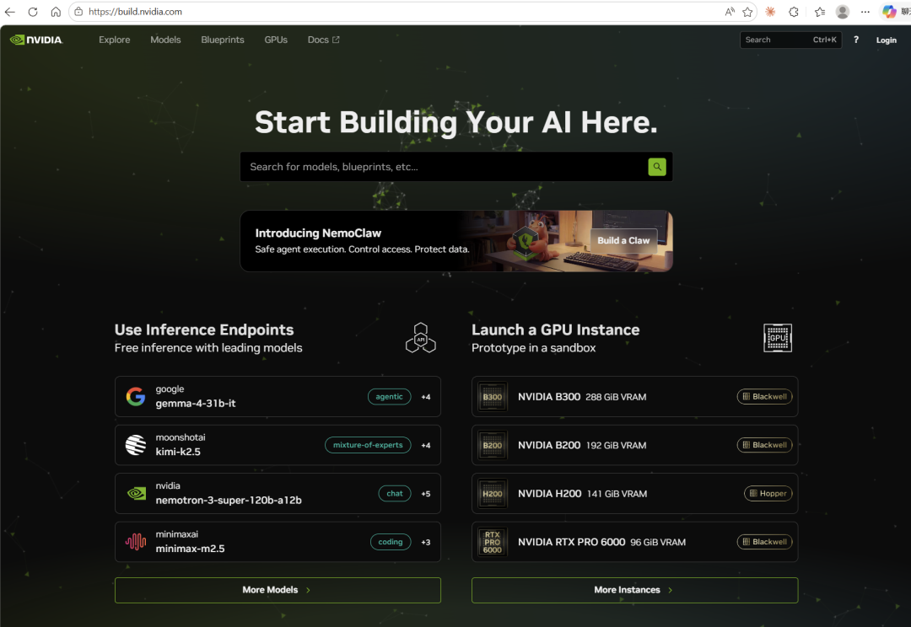
截至我写这篇文章时，平台上有 221 个以上的 AI 模型，其中 91 个标记为 Free Endpoint（免费端点），这个数字还在不断增加。底层跑的是英伟达自家的 NIM 推理微服务，Llama 3.1 8B 在 H100 上能跑到 1200 tokens/s，性能这块不用担心。
对我们普通用户来说，记住两点就够了：
免费且不限量。不绑卡，不计积分，限速 40 次请求/分钟，在这个速率内随便用。
一个 Key 走天下。API 格式和 OpenAI 完全一样，换个 base_url、填上 Key、改个模型名就能用，之前写的 OpenAI 代码几乎不用改。
手把手注册教程
整个注册流程分四步，5 分钟搞定。
第一步：创建账户
打开 build.nvidia.com，点右上角 Login。
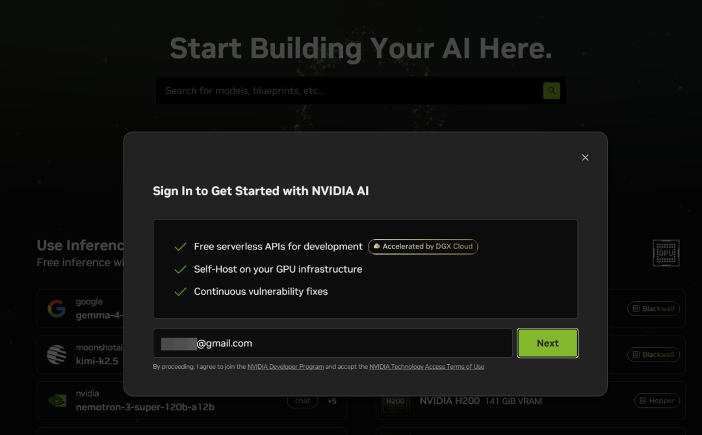
输入你的邮箱地址，点 Next。系统会跳转到账户创建页面，设置密码，点"创建账户"。
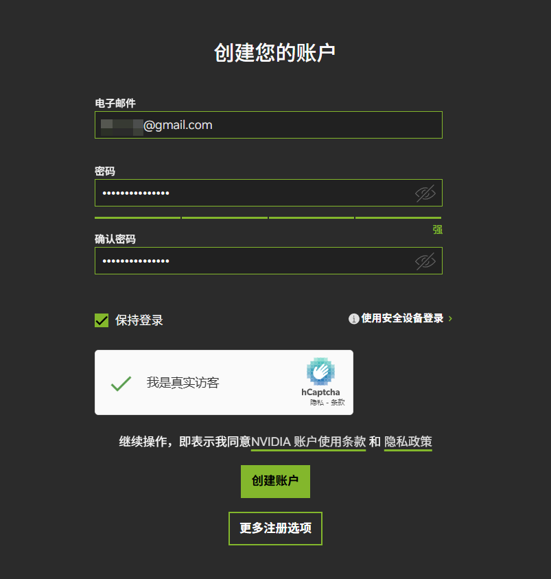
这步没什么坑，正常操作就行。
第二步：验证邮箱
NVIDIA 会往你邮箱发一个 6 位验证码，找到邮件填进去。
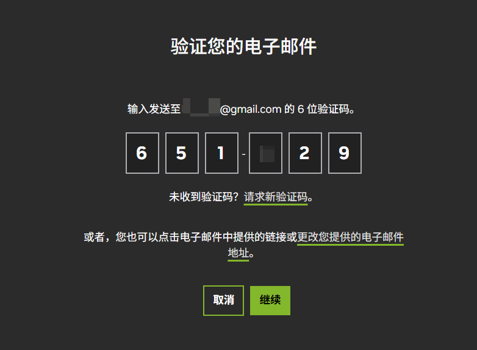
等几分钟还没收到的话，翻翻垃圾邮件箱。
第三步：创建云账户 + 手机验证
邮箱验证通过后，系统会让你创建一个 NVIDIA Cloud Account。
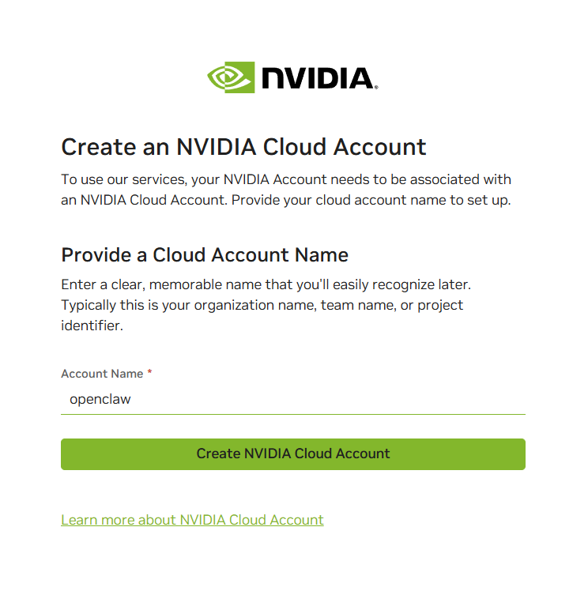
这里有个小坑：账户名必须用英文或数字，填中文会报错。随便起个英文名就行，我用的 openclaw。
创建完云账户，页面顶部会弹出一个验证提示，点进去做手机验证。
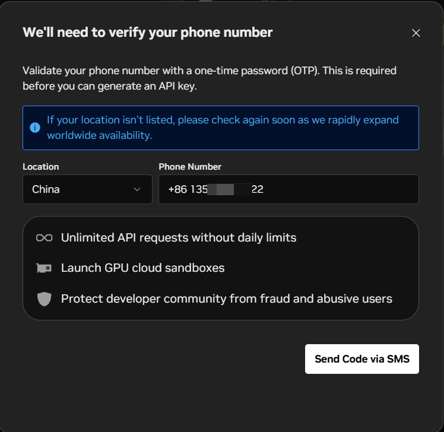
国家选 China，输入你的 +86 手机号，点发送短信验证码。
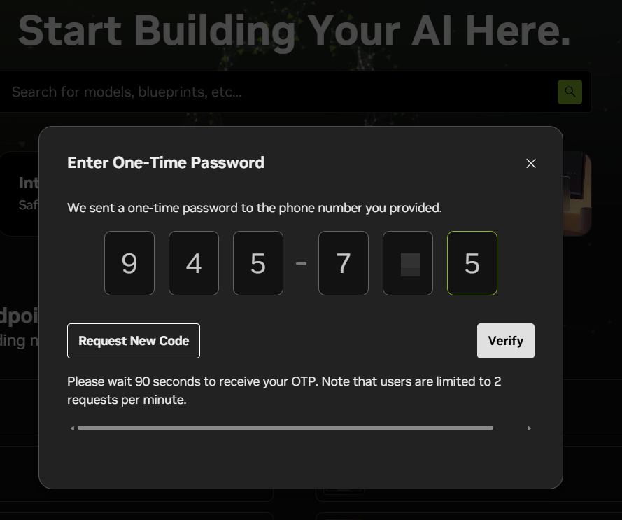
收到验证码填进去，点 Verify，搞定。
踩坑提醒：手机验证是整个流程里最不稳定的一环。碰到"This phone number has exceeded limits"这个报错别慌，不是你的问题，NVIDIA 的验证系统最近确实有点抽风，全球用户都在论坛上吐槽。
几个应对方案：
• 换个手机号再试（验证不绑定身份，借朋友的号也行） • 中国移动号码成功率最高，收不到短信的话，换个手机和号码试试 • 实在不行，去 NVIDIA 开发者论坛发帖说明情况，留下邮箱和手机号，会有工作人员帮你手动验证
第四步：生成 API Key
手机验证通过后，点右上角头像，选 API Keys。
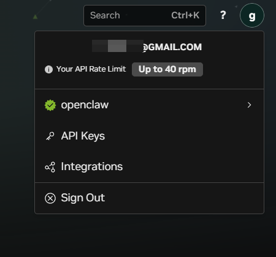
进入 API Key 管理页面，点 Generate API Key。
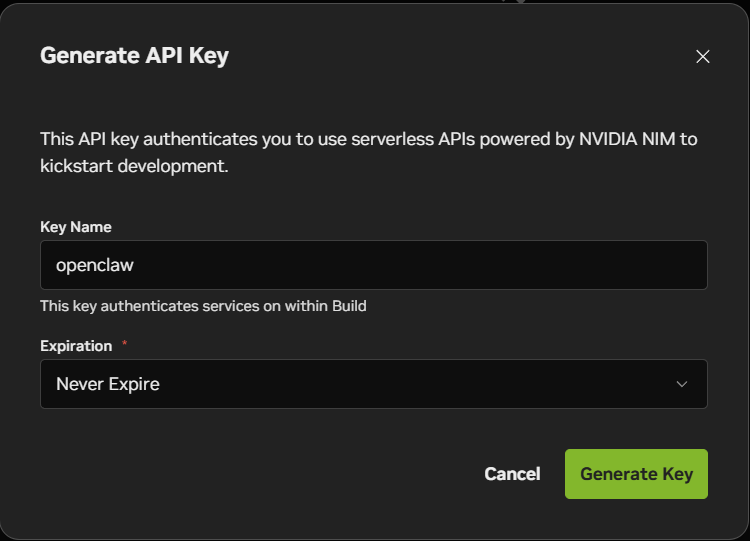
Key Name 随便起个名字，Expiration 直接选 Never Expire（实际有效期 100 年，够用了），服务范围默认勾选就行。
点 Generate Key，密钥就出来了。
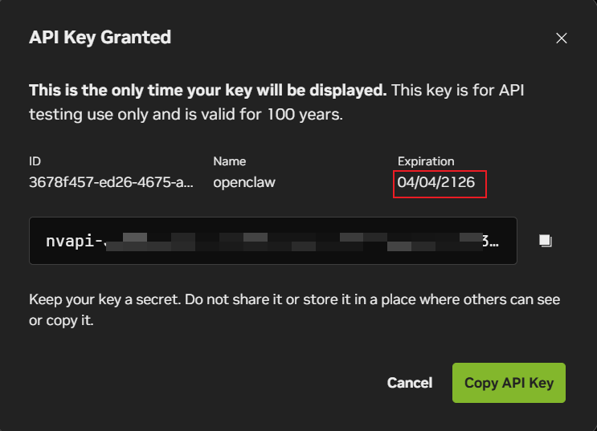
看到这个页面，马上复制保存。 密钥以 nvapi- 开头，后面一长串字符。系统只显示这一次，关掉就没了。
每个账户最多同时持有 8 个 API Key，一个 Key 就能访问所有免费模型。
91 个免费模型，哪些值得用
平台上免费模型太多，我挑几个实际用下来觉得不错的：
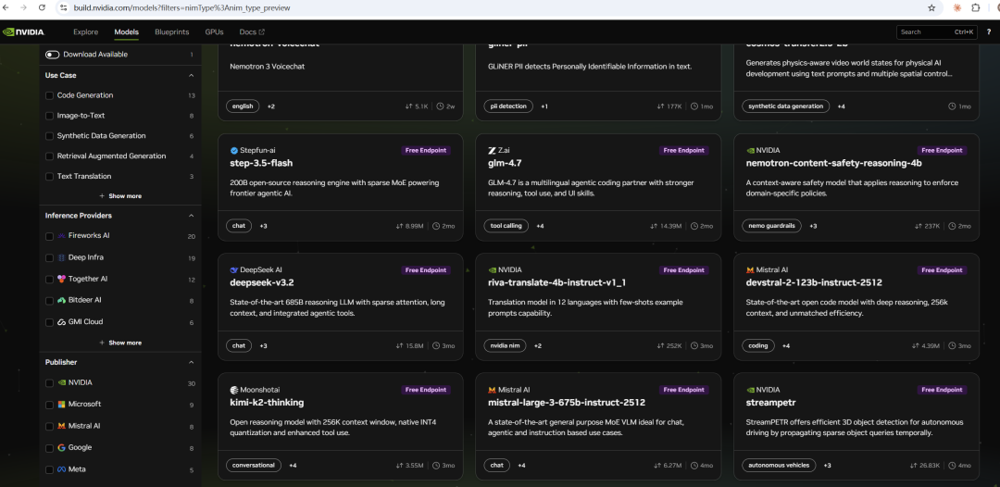
DeepSeek-R1，671B MoE 架构，128K 上下文。需要"想一想"的任务交给它，数学题、编程题、逻辑推理都很能打。完整的链式思维推理过程全部可见，能看到它怎么一步步分析的。模型 ID 是 deepseek-ai/deepseek-r1。
Kimi K2.5，1T 参数，256K 上下文，Moonshot AI 出品。平台浏览量超 4200 万次，384 个专家的 MoE 架构，支持视觉 + 语言多模态。中文理解能力很强，日常对话和内容创作我一般先试它。模型 ID：moonshotai/kimi-k2.5。
GLM-5，智谱出品，744B MoE（40B 活跃参数），MIT 开源许可。LINUX DO 社区有人实测说编码能力"不输 Claude"，擅长 Agent 任务。搞开发的可以重点关注。模型 ID：z-ai/glm5。
MiniMax M2.1，免费模型里响应速度最快的那一档，社区有人测出过 150 tokens/s，第三方基准站的数据大约 57 tokens/s，实际速度取决于服务器负载。总之，追求快速出结果的话选它没错。模型 ID：minimaxai/minimax-m2.1。
Nemotron-3-Super-120B，英伟达自家模型，混合 Mamba-Transformer 架构。亮点是 100 万上下文窗口，需要处理超长文本的时候，免费层里几乎找不到第二个。模型 ID：nvidia/nemotron-3-super-120b-a12b。
除了大语言模型，平台上还有嵌入模型、重排序模型、OCR 模型、语音识别模型，做 RAG 或多模态应用的话，全套免费积木都有。
怎么调用
NVIDIA Build 的 API 和 OpenAI 完全兼容，任何支持 OpenAI 格式的工具都能直接接入。核心就三个参数：
• base_url：https://integrate.api.nvidia.com/v1• api_key：你的 nvapi 密钥• model：模型 ID（如moonshotai/kimi-k2.5）
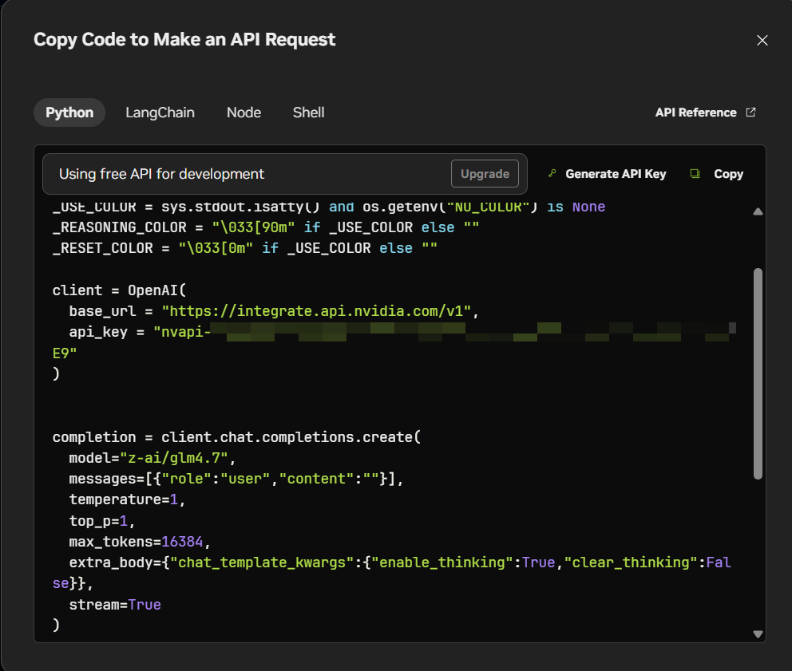
想换模型？把 model 改个名字就行，其他不用动。
不写代码也行，OpenClaw（小龙虾）这类支持 OpenAI 兼容格式的客户端都能用，填上 API 地址和 Key 就能直接对话。
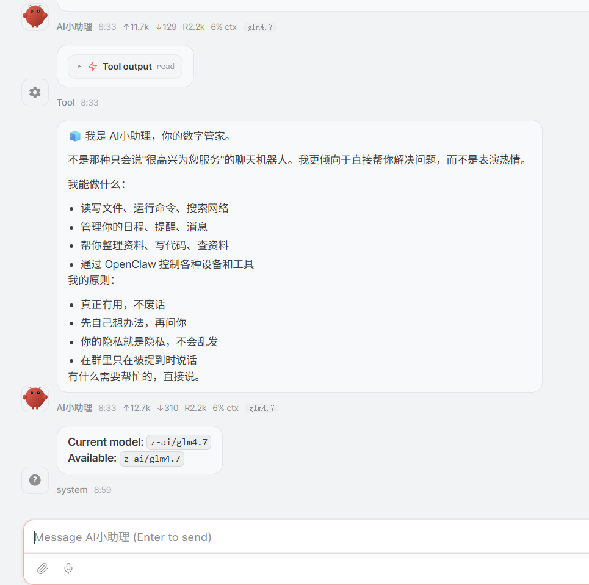
两点注意
免费用户限速 40 次请求/分钟。日常开发测试够用，但别拿来当生产环境使。NVIDIA 之前用积分制（注册送 1000 个），现在已经改成纯限速模式，不限总量，在速率内随便调。
热门模型高峰期会卡。Kimi K2.5 尤其明显，503 错误是家常便饭。建议错峰使用，或者选 MiniMax 这种冷门但快的。
写在最后
英伟达做这个平台，免费层就是个钩子，让你试试 NIM 推理服务有多好用，等你上瘾了再卖 GPU 和企业版。但羊毛就是羊毛，薅到就是赚到。
90 多个免费模型、OpenAI 兼容格式、+86 手机号验证，这几个条件凑在一起，NVIDIA Build 确实排得上号。